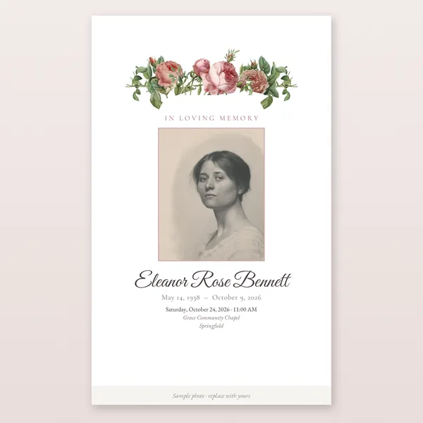
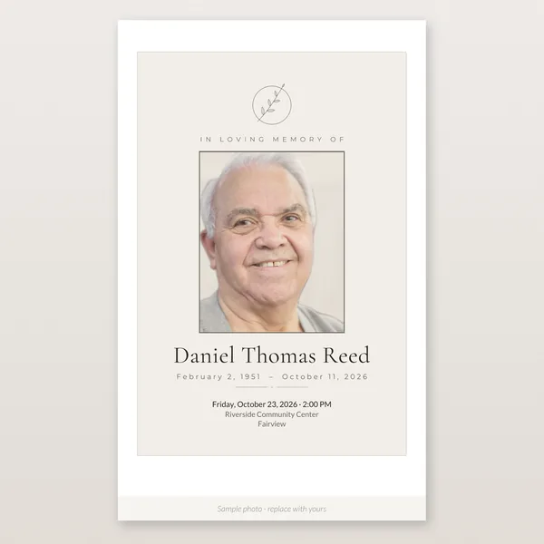
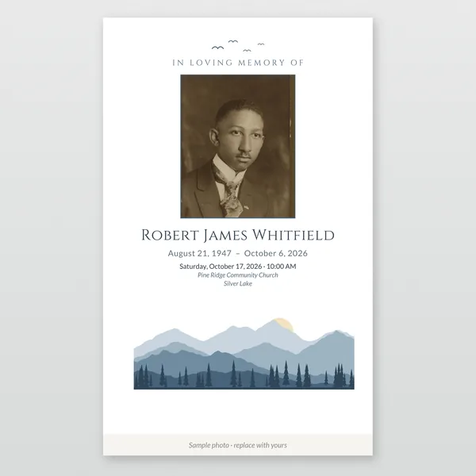
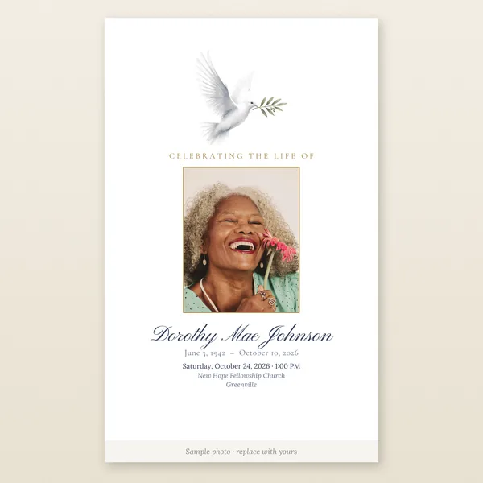
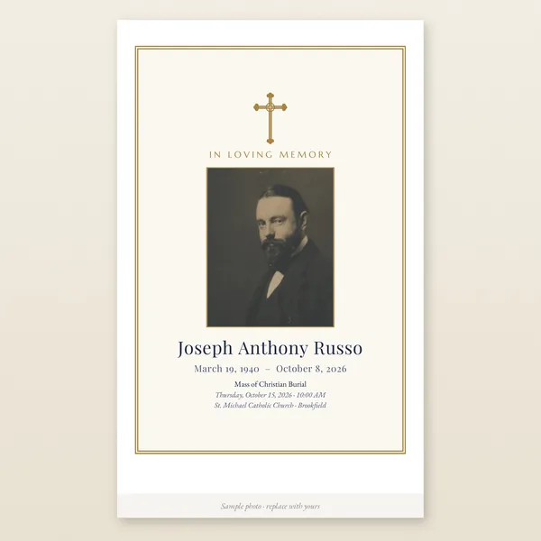
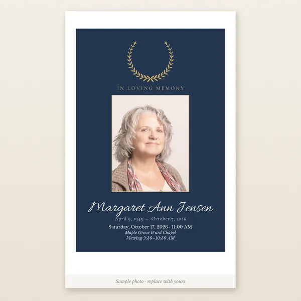
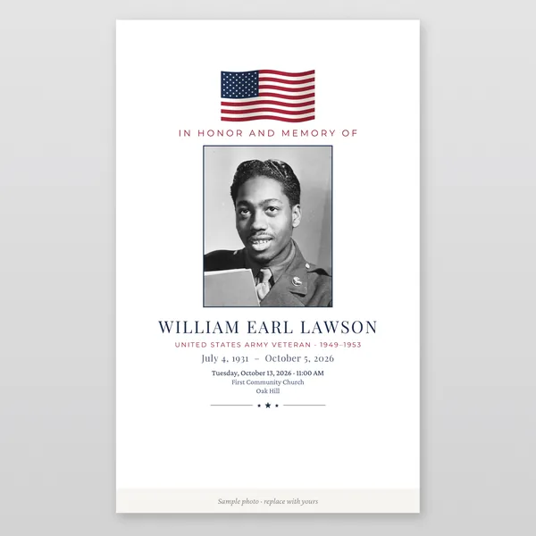
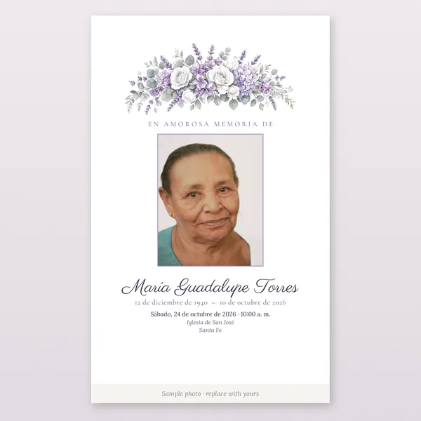
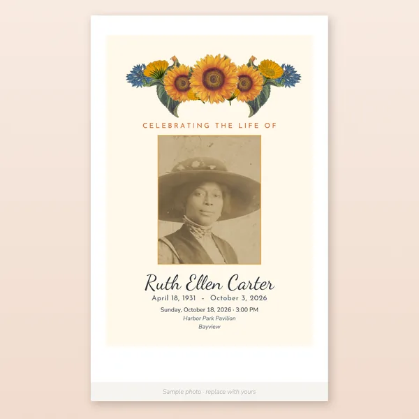
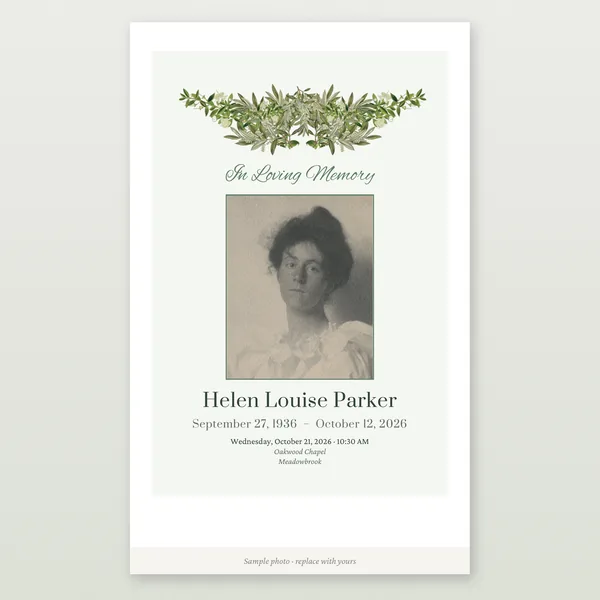

Type over the sample text, add a photo, and print at home or at a print shop. Each program opens in the free Google Docs app on a phone or Chromebook, and in Microsoft Word.

Pink watercolor roses, for a mother, grandmother or friend.

Clean, modern and non-religious.

Mountain landscape, for someone who loved the outdoors.

Dove and cross, for a Christian service.

Gold accents, for a Catholic Mass of Christian Burial.

Soft light, for a Latter-day Saint service.

Flag and stars, for a veteran.

Programa en español, lavender florals.

Bright and warm, for a celebration of life.

Greenery and leaves, gentle and natural.
Pick a template, type the obituary, order of service and back-panel text over the sample, add a photo, and print on US Letter paper double-sided, then fold in half to 5.5 x 8.5 inches. Most families finish in an evening.
Yes. Our templates are .docx files that open in the free Google Docs app on a phone, tablet or Chromebook, and in Microsoft Word on a computer.
Usually a cover with the photo, name and dates; the life story or obituary; the order of service (music, readings, speakers); and a back panel with a poem or scripture, pallbearers, a thank-you and burial or reception details.
The matching program plus prayer cards, thank-you cards, a guest sign-in sheet and slideshow title slides (PowerPoint and PDF), with a 13-page planning workbook (English designs).
Yes. The English program listings include a free 5-page Planning the Service guide with a checklist and wording ideas.
Questions? Email rememberedwell [at] spartasite [dot] com.
Remembered Well is a Sparta Labs project. Not affiliated with any church, funeral home or government agency. Sample names in the templates are fictional.